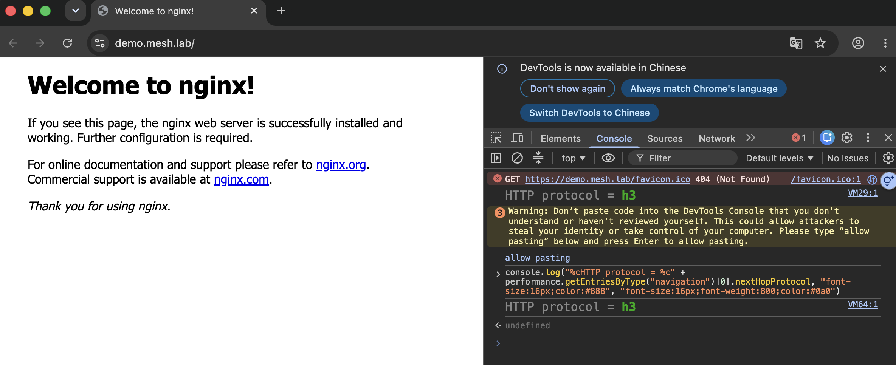

Day 1: Envoy Gateway 取代 Ingress Nginx——順便把 HTTP/3 開起來¶

入口流量以前都交給 Ingress。它把「用哪個 controller、在哪個主機路徑、送到哪個後端」三件事全塞進一個物件,而且新東西(像 HTTP/3)一直很難補上去。今天用 Envoy Gateway——Gateway API 的 Envoy 實作——把入口流量重新接一次,並且開起 Ingress 一直做不好的 HTTP/3。
你在課程的哪裡
今天要走的路¶
| 步驟 | 做什麼 | 對應 |
|---|---|---|
| 1 | 建一座 AKS 叢集,用 BYOCNI 裝上游 Cilium 當 CNI | 整個 Sprint 4 的地基 |
| 2 | 裝 Envoy Gateway,用 Gateway API 三件套路由一條入口流量 | gate:外部請求打到後端 |
| 3 | 開 HTTP/3(QUIC),驗客戶端真的走 h3 | gate:回應走 h3 |
一個先講清楚的詞:BYOCNI(Bring Your Own CNI,自帶 CNI)。開 AKS 時微軟預設會幫你裝一個受管的 CNI;BYOCNI 是叫它「什麼都別裝」(--network-plugin none),節點先呈 NotReady,再由你自己裝上游 Cilium。之所以要這樣,是因為受管版的 Cilium 只開放子集功能,而後面幾天要用到完整上游 Cilium 的 mesh/Gateway API——所以從第一天就自己裝。
Ingress 與 Gateway API:一份拆成三份¶
Gateway API 不是 Ingress 的加強版,是把 Ingress 那一份物件拆成三個各自負責的物件:
| Ingress 裡的一件事 | Gateway API 對應的物件 |
|---|---|
ingressClassName: nginx(用哪個 controller) |
GatewayClass(controllerName 指向 Envoy Gateway) |
| host + 入口埠(:80) | Gateway(listener) |
| path → backend | HTTPRoute(rules) |
拆開的好處是各段可以獨立擁有、獨立授權——平台團隊管 Gateway,應用團隊管自己的 HTTPRoute,不用再共編一份 Ingress。
步驟 1: 建 BYOCNI 叢集 + 裝上游 Cilium¶
叢集建起來時網路外掛是 none,節點會先卡在 NotReady——這是 BYOCNI 的正常現象,還沒裝 CNI 而已:
prov=Succeeded power=Running k8s=1.35.6 networkPlugin=none containerd=2.3.3-2
aks-nodepool1-31753998-vmss000000 NotReady ... containerd://2.3.3-2
裝上游 Cilium(這一組設定會一路用到 Day 3,先釘好):
helm install cilium cilium/cilium --version 1.20.0 --namespace kube-system \
--set aksbyocni.enabled=true --set nodeinit.enabled=true \
--set kubeProxyReplacement=true \
--set k8sServiceHost=<API server FQDN> --set k8sServicePort=443 \
--set socketLB.hostNamespaceOnly=true \
--set cni.exclusive=false --set envoyConfig.enabled=true
那幾個設定不是隨便挑的:cni.exclusive=false 是留位子給 Day 2 的 Istio(讓它的 CNI 掛得上去),kubeProxyReplacement=true 是 Day 3 Cilium L7 要的前置。裝完節點就轉 Ready:
aks-nodepool1-31753998-vmss000000 Ready <none> 6m30s v1.35.6
# cilium status
Cilium: OK
Envoy DaemonSet: OK
Cluster Pods: 5/5 managed by Cilium
kube-proxy 沒有走,而是跟 Cilium 併存
設了 kubeProxyReplacement=true、Cilium 接手了 kube-proxy 的活,但 AKS 的 kube-proxy DaemonSet 仍然在跑(desired=1)——AKS 不會因為你裝了 Cilium 就把它撤掉。Day 1 這不影響功能,但 Day 3 要純用 Cilium 的 L7 時得回頭確認這件事。
步驟 2: Envoy Gateway + Gateway API 三件套¶
裝好 Envoy Gateway 後,套用三件套(GatewayClass / Gateway / HTTPRoute)。Envoy Gateway 會自動佈一個 Envoy proxy,並替它開一個 Azure LoadBalancer 拿公網 IP:
Gateway eg: Accepted=True Programmed=True
HTTPRoute web: Accepted=True ResolvedRefs=True
envoy-mesh-demo-eg-dd08789d LoadBalancer <LB-IP> 80:32421/TCP
打進去驗——對的 host 走到 nginx 後端、錯的 host 不被路由:
$ curl -H "Host: demo.mesh.lab" http://<LB-IP>/
HTTP/1.1 200 OK
server: nginx/1.13.6
$ curl -H "Host: nope.invalid" http://<LB-IP>/
wrong-host -> HTTP 404
200 而且 server: nginx,代表請求真的經過 Envoy Gateway、照 HTTPRoute 找到後端;錯 host 拿 404,代表 hostname 比對有生效。第一個 gate 過了。
步驟 3: HTTP/3¶
先講 HTTP/3 是什麼、為什麼 Ingress 一直很難:它走的傳輸協定是 QUIC,而 QUIC 跑在 UDP 上(HTTP/1 和 HTTP/2 是走 TCP)。Ingress Nginx 對 HTTP/3 的支援一直很卡,Envoy Gateway 則是設定一個欄位就開:
apiVersion: gateway.envoyproxy.io/v1alpha1
kind: ClientTrafficPolicy
metadata:
name: enable-http3
spec:
targetRefs:
- group: gateway.networking.k8s.io
kind: Gateway
name: eg
http3: {}
開了之後,Envoy Gateway 自動在同一個 LoadBalancer service 上多掛一個 UDP 443(給 QUIC 用):
envoy-mesh-demo-eg-dd08789d LoadBalancer <LB-IP> PORTS: 80,443,443 PROTOS: TCP,TCP,UDP
http-80: TCP/80
https-443: TCP/443
https-443-h3: UDP/443 ← http3 帶出來的 QUIC port
AKS 的 LoadBalancer 有個常見認知:一個 service 不能在同一個埠同時掛 TCP 和 UDP,要拆成兩個 service 共用一個 IP、還得加特別的 annotation。這一版 Envoy Gateway + AKS 不是這樣——一個 service 就承載 TCP80 / TCP443 / UDP443,Azure 自動配了 IP、也自動放行了 UDP 防火牆,不用手動繞。
先看 HTTPS(走 TCP 443 的 h2)有沒有廣告 h3。伺服器用一個叫 alt-svc 的回應標頭告訴瀏覽器「我這裡也有 h3,你可以升級」:
$ curl -k --http2 --resolve demo.mesh.lab:443:<LB-IP> https://demo.mesh.lab/
HTTP/2 200
alt-svc: h3=":443"; ma=86400 ← 廣告了 HTTP/3
再用一顆有 HTTP/3 的 curl 真的連一次(macOS 內建的 curl 8.7.1 沒編 h3,見誠實的差距;brew install curl 那顆有),-v 把整條 h3 攤開:
$ curl --http3 -v --resolve demo.mesh.lab:443:<LB-IP> https://demo.mesh.lab/
* Connected to demo.mesh.lab (<LB-IP>) port 443
* using HTTP/3 ← 走 HTTP/3
> GET / HTTP/3
< HTTP/3 200 ← 回應也是 HTTP/3
< server: nginx/1.13.6
< alt-svc: h3=":443"; ma=86400
using HTTP/3、GET / HTTP/3、HTTP/3 200 三行,就是客戶端經 QUIC/UDP 443 → Azure LB → Envoy 的 QUIC listener → nginx、一路走 HTTP/3。第二個 gate 過了。
瀏覽器要走 h3,得先信任憑證¶
curl 加 -k 就肯對自簽憑證硬走 h3,瀏覽器不會。同一個站,Chrome 強制走 QUIC 時,自簽憑證會直接 ERR_QUIC_PROTOCOL_ERROR——瀏覽器對 QUIC 的憑證要求比 TCP 嚴,而且 QUIC 沒有 TCP 那種「仍要前往」可以點。把憑證換成一張本機信任的(例如 mkcert 簽發、把它的 CA 加進系統信任區),Chrome 才走得動 h3。
而且要「看到」它走 h3,不能看頁面——h1/h2/h3 載出來的畫面一模一樣。要確認協定有兩個地方:DevTools 的 Network 分頁把 Protocol 欄叫出來(會顯示 h3),或在主控台問瀏覽器自己:
nextHopProtocol 是 Navigation Timing API 直接回報「這一頁實際用哪個協定載入」,對 https://demo.mesh.lab/ 它回 "h3"。實際在 Chrome 開這個站、DevTools 主控台跑一次就是下面這樣:

網址列是 demo.mesh.lab、頁面是 nginx 預設頁,右邊主控台印出 HTTP protocol = h3——同一頁看起來跟 h1/h2 沒兩樣,協定的差別只在這裡讀得出來。
在瀏覽器驗 h3 有兩個前提:憑證要能被信任、而且要看協定(Network 分頁的 Protocol 欄、或主控台的 nextHopProtocol)而不是看頁面——這是把 HTTP/3 端到端接起來時最容易漏掉的兩步。
驗收 checkpoint¶
| 驗證 | 判準 | 本課環境的結果 |
|---|---|---|
| 外部請求經 HTTPRoute 到後端 | 對的 host 回 200、錯的 host 不被路由 | demo.mesh.lab → 200 nginx;nope.invalid → 404 |
| Ingress 規則可對應成 Gateway API | 一條 Ingress 拆成 GatewayClass/Gateway/HTTPRoute 三件 | 對照見 sprint4-day1-mesh-manifests/ |
| HTTP/3 客戶端走 h3 | curl --http3 回 http_version=3 |
HTTP/3 200、alt-svc: h3=":443" |
誠實的差距¶
- 系統內建的 curl 沒有 HTTP/3。macOS 內建
curl 8.7.1只編了 HTTP/2(nghttp2),curl --http3會回「the installed libcurl version doesn't support this」。brew install curl(8.21.0,帶 ngtcp2 + nghttp3)那顆有,但它是 keg-only,要用完整路徑/opt/homebrew/opt/curl/bin/curl或把它加進PATH,不然打到的還是沒 h3 的系統 curl。 - 混合 TCP+UDP 的 LoadBalancer 只驗了會成、沒探邊界。這一版 AKS + Envoy Gateway 一個 service 就吃下 TCP+UDP 443;但沒有反過來測「換更舊的 AKS 或 Envoy Gateway 版本會不會就得拆兩個 service」。所以「不用繞」這個結論綁在這組版本上。
- 單節點量測。整座叢集只有一個 D4s_v3 節點,Day 1 夠用;但要拿它量效能(Day 4 的對比),單節點的排程壓力會污染數字,那時得先擴到兩個節點。
- kube-proxy 併存的後果沒追到底。設了
kubeProxyReplacement=true但 AKS 的 kube-proxy 還在跑,Day 1 功能正常;這個併存對 Day 3 純 Cilium L7 有沒有影響,留到 Day 3 再確認。
帶得走的東西¶
- Gateway API 是把 Ingress 一份拆成三份(GatewayClass / Gateway / HTTPRoute),讓入口流量的三件事各自可獨立擁有與授權。不是換個寫法,是換個權責模型。
- BYOCNI 是「叫 AKS 別管網路、我自己裝」,換到的是完整上游 Cilium 的功能,代價是那一層要自己顧。要用受管版沒有的功能,才值得走這條。
- HTTP/3 的難處在 UDP:QUIC 跑在 UDP 上,而傳統入口與雲端 LoadBalancer 對「同埠混 TCP/UDP」向來彆扭。Envoy Gateway 一個欄位開起來、AKS 這版又剛好不用繞——但這種「剛好不用繞」要標清楚綁哪個版本,別當成永遠成立。
- 工具鏈自己的 bug,錯誤訊息可能只給底層 traceback。
az aks create吐 Python traceback 時,根因是擴充套件版本,不是叢集建立參數——先比對版本,能省掉在參數上鬼打牆的半小時。
延伸閱讀¶
- Envoy Gateway — HTTP/3 任務頁 —— 今天開 HTTP/3 用的
ClientTrafficPolicy.http3的官方文件,含它對 QUIC listener 的處理。 - Kubernetes Gateway API 官網 —— GatewayClass / Gateway / HTTPRoute 三件套的規格出處;想理解「為什麼拆三份」讀它的 API concepts。
- AKS — Bring your own CNI(BYOCNI) ——
--network-plugin none的官方說明,以及「叢集我們支援、你的 CNI 你自己顧」的支援邊界。
下一步¶
north-south 這層通了——入口流量走 Envoy Gateway、HTTP/3 也開了。Day 2 換到 east-west:同一座叢集上起 Istio ambient,讓服務之間自動 mTLS 加密、再對一個服務設斷路把它壓到跳開。而 Istio 要疊在今天裝的 Cilium 上,那個 cni.exclusive=false 的伏筆,Day 2 開頭就收。
Envoy 標誌為 CNCF(Linux Foundation)官方資產,此處作社群教學用途。瀏覽器 DevTools 擷圖為本課程實測自製。